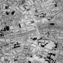

Lab 3: Creating Custom Tiled Map Overlays
Lab will be held on January 8 2013 @ Science Gallery, Dublin, at 6pm
About this lab:
Originally developed as part of a requirement to provide offline mapping functionality in an iOS app, we realised that there is a whole plethora of other purposes this could be put to.
MKMapKit is the maps-based framework provided by Apple for iOS development. Originally based around Google Maps, the same functionality is now available in conjunction with the new Apple vector maps.
We can add images to a map view using the MKOverlayView class. MKOverlayViews are anchored to the map view, and will zoom and pan in sync with the map. To ensure the image quality remains excellent at high zoom levels, we need images of high resolution. To ensure we don't incur a performance hit when using large images, we need to break the image up into tiles using the GDAL framework.
We can also cater for map images that aren't perfectly lined up with Google Maps' Mercator projection, by using Google Earth to calculate the map image's corner coordinates for use with the GDAL commands.
This lab will be hands-on, and involve no small degree of jumping between Xcode, shell-scripting & terminal commands, and image-editing. Bring warm clothes and a packed lunch.
Lab Requirements:
- Xcode
- Any image editor capable of exporting to PNG (eg Photoshop or Pixelmator)
- Google Earth (available from google.com/earth)
- GDAL Framework (available at kyngchaos.com/software or alternatively hoster here)
Lab Files:
TileOverlays Xcode project (TileOverlays.zip)
Maps for use during the Lab:
Medieval Dublin maps
{kind=link}
{kind=link}
{kind=link}
{kind=link}
Medieval Dublin map kml file
{kind=link}
Other maps (for the interested reader):
{kind=link}
{kind=link}
{kind=link}

{kind=link}
{kind=link}

{kind=link}

{kind=link}
{kind=link}
GDAL Notes:
Tutorial Notes on using GDAL